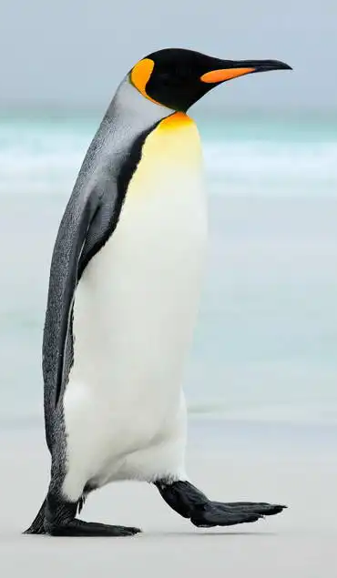

Lesklý tučňák

Tucnák lesklý, věrný obyvatel arktických krajin, je zářivým příkladem přírodního mistrovství a přizpůsobivosti. Jeho elegantní postava a černobílý kabátek jsou nezaměnitelnými znaky tohoto půvabného tvora, který se stal symbolem chladného severu.
Tucňák lesklý, vědecky známý jako Pygoscelis papua, obývá především jižní oceány kolem Antarktidy a okolních ostrovů. Jeho jméno, „lesklý“, odkazuje na jeho lesklý peří, které mu pomáhá udržovat teplo a zároveň mu dodává elegantní vzhled. Černobílý vzor na jeho těle není jen estetickým prvkem; slouží také jako kamufláž, která mu pomáhá při lovu a zároveň mu chrání před predátory.
Tucňák lesklý je známý svou schopností plavat rychle a obratně. Jeho křídla se stala ploutvemi, které mu umožňují pohybovat se pod vodou s neuvěřitelnou gracií a efektivitou. Dokáže se potápět až do hloubek několika desítek metrů, kde loví ryby, krily a jiné mořské tvory, které tvoří základ jeho stravy.
Pro tucňáka lesklého je rozmnožování zásadním obdobím v jeho životě. Každý rok se tito tucňáci shromažďují ve velkých koloniích na pobřeží, kde samci hlasitými zpěvy lákají samice. Po spáření samice snáší jedno vejce, které následně inkubuje na svých nohách, přikryté peřím, aby bylo chráněno před chladem. Samec pečlivě hlídá vejce až do vylíhnutí mláďat, kdy se střídají v jejich krmení.
Nicméně, tucňák lesklý a jeho životní prostředí čelí mnoha hrozbám. Změna klimatu a úbytek ledu ovlivňují dostupnost potravy, zatímco rybolov a znečištění ohrožují jejich životní prostředí. Ochrana těchto nádherných tvorů je proto klíčová pro zachování biologické rozmanitosti antarktických oblastí.
Tucňák lesklý nám připomíná krásu a křehkost arktického ekosystému a naléhavou potřebu jeho ochrany. Jeho přítomnost ve chladných vodách je symbolem odvahy a vytrvalosti, ale zároveň nás varuje před důsledky lidské činnosti na naši planetu. Je na nás, abychom se postarali o to, aby tito nádherní tvorové měli stále místo ve světě plném ledu a moří.